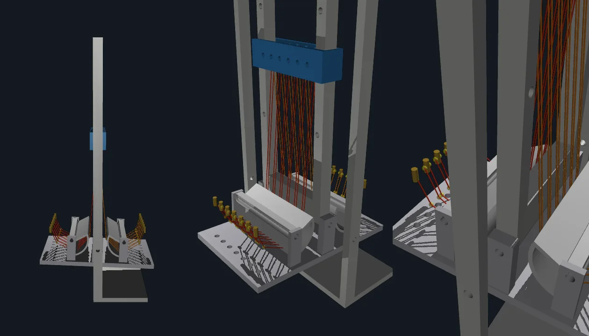

Run many thin wires in parallel, and fire them in turns
A shape-memory-alloy wire contracts when it's heated (in practice, when you pass current through it) and relaxes as it cools. That makes it a linear actuator with no motor, no gearbox, and almost no volume, which is what you want in a biomimetic joint that needs a muscle-like pull. The problem is speed. A wire can only contract again once it has cooled, and cooling is slow.
The approach I'm testing works around the cooling limit:
- Several thin Flexinol wires share the load instead of one thick wire, so each one cools faster.
- The wire is routed back and forth as one continuous zigzag, which keeps tension equal across every segment, while each electrical post along the route stays independently controllable.
- Wire sections fire in sequence. Some contract while others are still cooling, so output frequency goes up without any individual wire cycling faster.
- A wire's resistance changes as it recovers thermally, so watching resistance tells the controller which wires are ready to fire again, with no extra sensors on the actuator itself.

Simulate the rig before building it
Before the printed frame existed I built the v2 rig in MuJoCo, from the assembly STLs, to check that the wire routing would produce the ankle motion I wanted and to size the free wire length. The model is generated by a script rather than hand-placed, so a geometry change in CAD re-derives every bolt, turn-point and tendon path.
- The foot plate pivots on the ankle pin. M4 bolts stand in the foot's edge holes and in the slidable height-adjust carriage above it; one continuous wire per side zigzags foot bolt → under the saddle arc → carriage bolt → back down. The under-arc wrap on the swappable R = 25.4 mm saddles is what turns wire tension into ankle torque: the toe side pulls plantarflex, the heel side dorsiflex.
- Each side's zigzag is modelled as 12 independent spatial tendons rather than one, since capstan friction at every bolt wrap stops the wire slipping. That way a MOSFET can heat its own post-pair section and the sim actuates per strand, the same as the drive on the bench. 24 tendons, 24 actuators, one hinge joint with a ±0.8 rad stop.
- The carriage slides to one of four side-pin holes, and that sets the free wire length.
gen_variants.pyrebuilds the rig at each pin, then sweeps SMA strain kinematically: for each commanded strain it solves the ankle angle where the active side's tendon length equalsL₀·(1 − s), and exports the geometry and motion for the viewers below.
| Carriage pin | Free length | Ankle ROM @ 4 % strain | Ankle ROM @ 6 % strain |
|---|---|---|---|
| 7.4″ | 178 mm | 63.7° — 32.3° plantar / 31.5° dorsi | 91.7° — hits the stop both ways |
| 8.3″ | 201 mm | 73.2° — 37.4° / 35.8° | 91.7° — stop |
| 9.2″ | 224 mm | 83.3° — 43.1° / 40.3° | 91.7° — stop |
| 10.1″ | 247 mm | 90.9° — 45.8° / 45.1° | 91.7° — stop |
Flexinol's datasheet recoverable strain is 4–6 %. At 6 % every pin setting saturates at the ±45.8° joint stop; at 4 % only the longest free length gets there, and the shortest reaches two-thirds of it. That spread is why the carriage is adjustable.

Firing has to fail safe
An SMA wire that's left energized keeps heating until it's damaged, so the firing loop can't depend on a laptop that might crash or drop USB mid-pulse. The Arduino Mega has the final say on the gates, not the PC:
- The Mega enforces a hard
MAX_ONceiling on every pulse and a host heartbeat. If it stops hearing from the PC for ~100 ms, it drops all gates. The PC only ever sends commands; the Mega decides whether to carry them out. - The serial link is one-way: a fire-and-forget ASCII protocol at 115200 baud, PC → Mega only. The firing loop never blocks waiting on the host, and the timing base stays untouched.
- Each section of the array is driven by its own low-side MOSFET. A small command set (
START/STOP,PERIOD,ONTIME, per-section enable, and a manualFIREfor calibration) sets the rotation.
MAX_ON ceiling + host heartbeat fail-safeFIRE is manual, for calibration
Reading the wires
The wire's resistance tracks the phase transformation as it heats and cools, so it works as its own sensor. I don't poll the Arduino for state at all. The DAQ watches the wires directly and everything is inferred from voltage:
- A resistor across each MOSFET pushes a few mA of continuous sense current, far too little to heat the wire, so there's a live resistance reading on every wire between firings, not just during them.
- R = V / I per wire. Normalised against a per-wire calibration it becomes a recovery fraction,
ρ = (R_start − R_min) / (R_0 − R_min), that says how far each wire has cooled. That's the signal the scheduler fires on. - Rather than trust a fixed on-time table, the plan is to fire a hot, short pulse and cut it the moment resistance says the wire has finished contracting, per wire and per pulse. Fixed-duration open-loop firing is the baseline to beat.
- A multichannel differential DAQ samples the wire voltages, a shunt gives true current (so R and energy don't assume a fixed current), and the firing sync line lands on a spare DAQ input. Every fire event sits on the same timebase as the resistance trace it caused, with no clock-stitching.
- bias sense current
- R = V/I
- readiness ρ
- fire hot
- R-triggered cutoff
All of it lands in a browser dashboard I built for the lab: live voltage and resistance strip charts, a motor-unit-style firing raster (one bar per detected pulse, from a voltage-hysteresis detector), and a pulse table logging duration, energy, R start/end, ΔR and cycle count. Every run is written to disk so I can go back through it later.
Timeline
- Nov 2025Joined the lab as an undergraduate student researcher.
- May 2026Presented the parallel-array work at the Virginia Tech Hume Colloquium alongside two lab-mates (Ethan Yueh, Christine Robinson); MITRE and MIT Lincoln Laboratory roundtables the same day.
- Sep 2026Drive electronics + acquisition dashboard bring-up; first single-channel resistance runs logged end to end.
- Fall 2026 →Scaling from single-channel to the full array; manuscript in preparation.